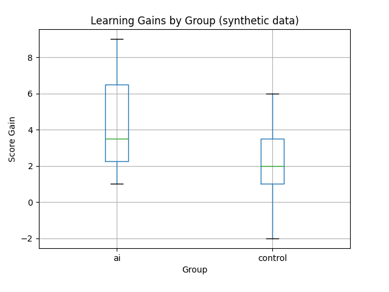

Synthetic data. Every score on this page is randomly generated by regenerate_marks.py and does not describe real students. The page shows how such an analysis is laid out and read.
This report shows how an experiment measuring the impact of an AI tool on learning gains would be summarised.

Consider experiment design, fairness, and reproducibility when evaluating educational interventions.